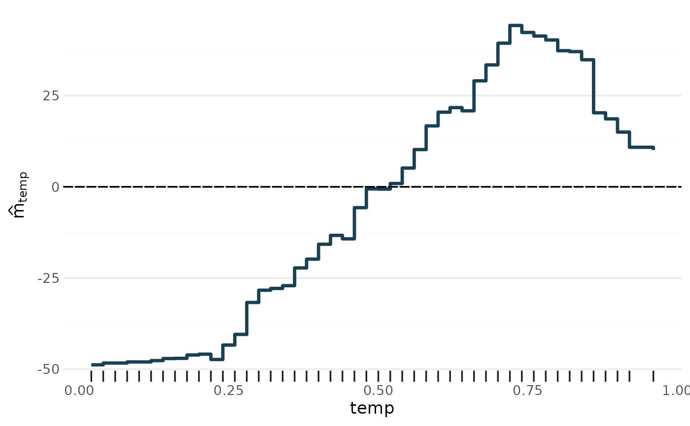
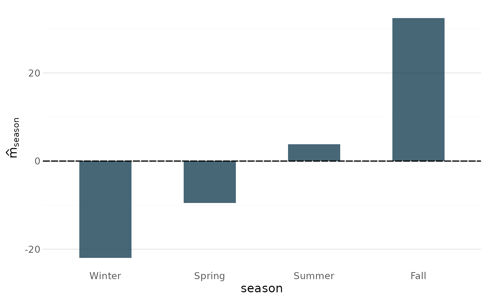
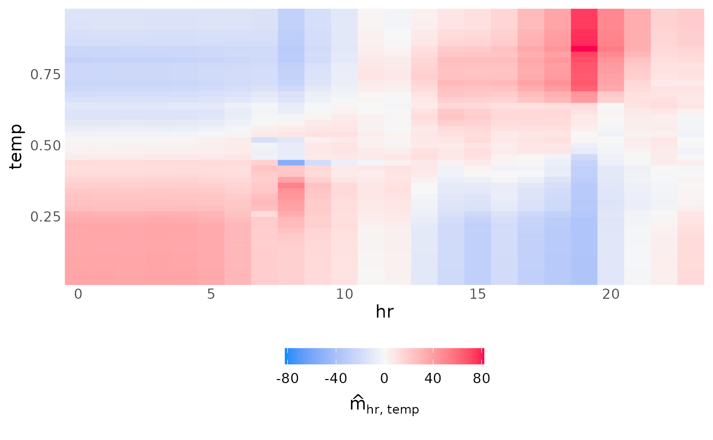
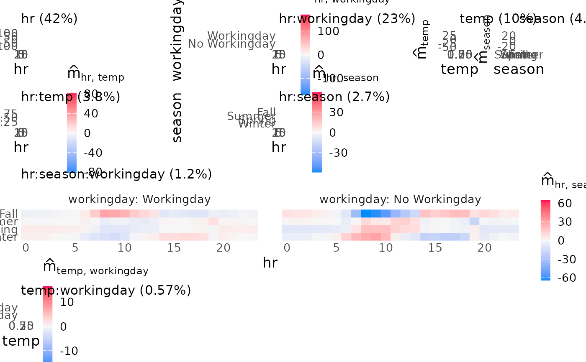
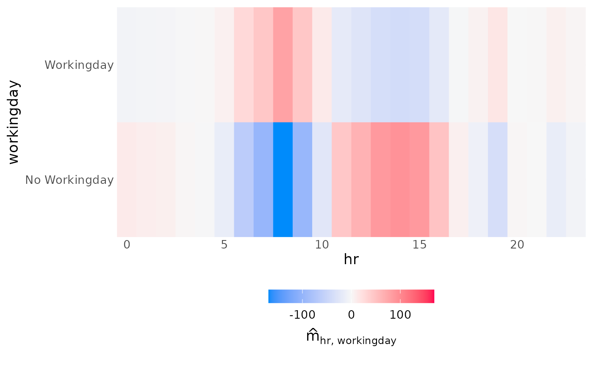

Plot Prediction Components
Source:R/plot.R, R/plot_main_effect.R, R/plot_threeway_effects.R, and 1 more
plot_components.RdPlotting the main effects among the prediction components is effectively identical to a partial dependence plot, centered to 0.
Usage
# S3 method for class 'glex'
plot(
x,
predictors = NULL,
...,
measure = NULL,
max_components = NULL,
ncol = NULL,
resolution = 100L
)
plot_main_effect(object, predictor, rug_sides = "b", ...)
plot_threeway_effects(
object,
predictors,
rug_sides = "b",
resolution = 100L,
...
)
plot_twoway_effects(
object,
predictors,
rug_sides = "b",
resolution = 100L,
...
)Arguments
- x
Object of class
glex.- ...
Used for future expansion.
- measure
(
character(1) | NULL: NULL) Withoutpredictors: the importance of each component, given in its title and ordering the plots, computed from the components atx(seeglex_vi()):"variance": its mean square as a share of the variance of the prediction atx, in percent;"mean_abs": its mean absolute value, in units of the prediction (yfor regression).
NULLuses"variance"for a Random Planted Forest fromrpf()of randomPlantedForest 0.6 or later (classrpf_pruned) and"mean_abs"otherwise.- max_components
(
integer(1) | NULL: NULL) Withoutpredictors: the most components to draw, the most important first.NULLdraws all components of a model of classrpf_prunedand at most 12 otherwise.- ncol
(
integer(1) | NULL: NULL) Withoutpredictors: the number of columns of main effects and pairs. A component with several panels spans a row of its own.NULLuses up to 4.- resolution
(
integer(1): 100) Models of classrpf_prunedonly: the most cells of a heat map along each predictor, see Details.- object
Object of class
glex.- predictor, predictors
(character)vector of predictor names, e.g."x1"to plot main effect ofx1, andc("x1", "x2")to plot the interaction termx1:x2.- rug_sides
(character(1): "b")Sides to plot rug (seeggplot2::geom_rug()) plot on for continuous predictors.. Default is"b"for both sides. Set to"none"to disable rug plot.
Details
plot() without predictors draws the model's components in one figure (with the patchwork package), the most
important first by measure, each titled by its name and importance, e.g. x2:x3 (24%): main effects and two-way
interactions for any model, and for a model of class rpf_pruned (what rpf() returns from randomPlantedForest
0.6 on) all of its components, including those of three or more predictors.
Models of class rpf_pruned. Such a model has few components, each stored in the form it predicts with. The
plots show each component as it enters the prediction:
a main effect as a step curve through its values at
x;a two-way interaction as a heat map, evaluated on a grid of the values of its predictors in
x: at mostresolutioncells along each predictor, the distinct values if there are at mostresolution, otherwise the values at the quantiles(i - 0.5) / resolution, each cell reaching halfway to its neighbours (a factor: one cell per level);a component of three or more predictors as heat maps over two of its predictors, one per cell of the others (the cells the model stores for it), each labelled by its cell, on one colour scale. The heat maps are exact in the other predictors: the component is constant on each cell.
plot_threeway_effects()draws them for three predictors,plot()for any number; the order ofpredictorsdoes not matter. (A model from an earlier randomPlantedForest that does not store the cells gets one heat map, the other predictors at their values in the first row ofx, with a message.)
For multiclass models every plot has one panel (or set of heat maps) per class. The grids need the model, which the
glex object keeps: a model saved to a file and restored without randomPlantedForest::rpf_unmarshal() can't be
evaluated.
See also
Other Visualization functions:
plot.glex_vi(),
plot_force(),
plot_pdp(),
plot_shap_decomposition(),
plot_waterfall()
Examples
library(randomPlantedForest)
# Every 8th hour of the bike sharing data (see ?bike)
bike_8 <- bike[seq(1, nrow(bike), by = 8), ]
# Fit the model, get components
set.seed(12)
rpfit <- rpf(bikers ~ hr + temp + workingday + season, data = bike_8, max_interaction = 3)
components <- glex(rpfit, bike_8)
# Main effects ----
plot_main_effect(components, "temp")

plot_main_effect(components, "season")

# plot() picks the plot by the number of predictors ----
plot(components, c("hr", "temp"))

# and without predictors draws the whole model ----
plot(components)

# plot_threeway_effects(components, c("hr", "temp", "workingday"))
library(randomPlantedForest)
# 2-degree interaction effects ----
# 2d continuous
plot_twoway_effects(components, c("hr", "temp"))
 # continuous + categorical
plot_twoway_effects(components, c("hr", "workingday"))
# continuous + categorical
plot_twoway_effects(components, c("hr", "workingday"))
